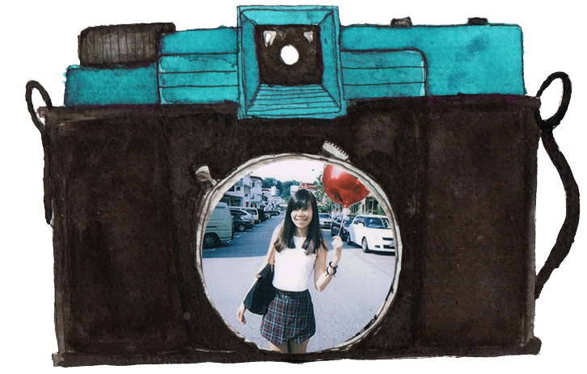

Hi, my name is Alicia and this is my e-portfolio.
I'm currently taking my Diploma in Creative Writing for TV and New Media
in Singapore Polytechnic.
I have a passion in photography and arts.
I experiment with analog camera and incline towards graphite drawings.
I like things simple and monochromatic.
It's the same with life.